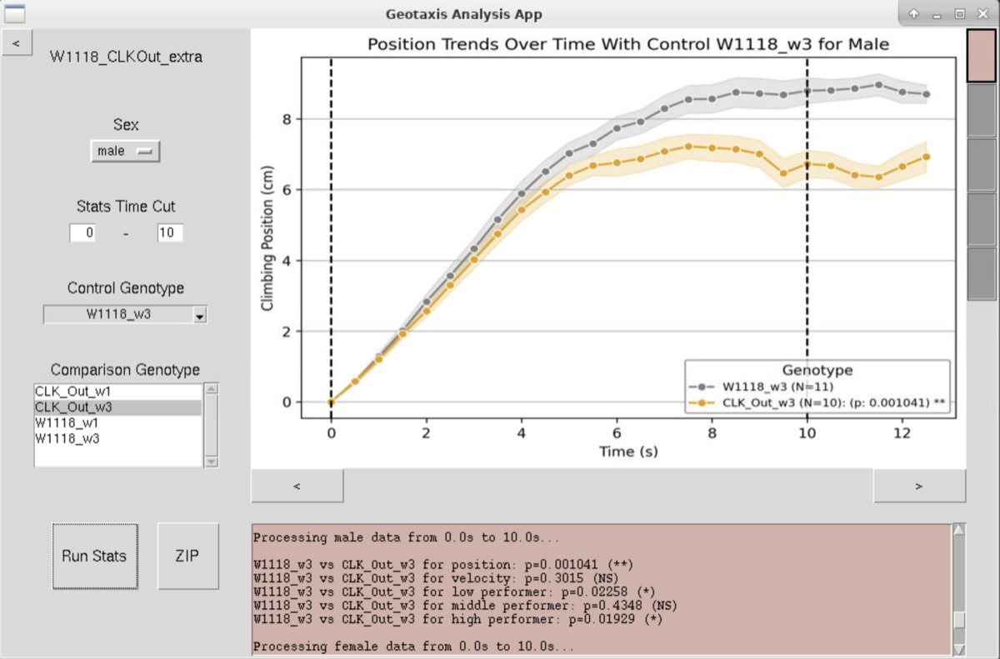
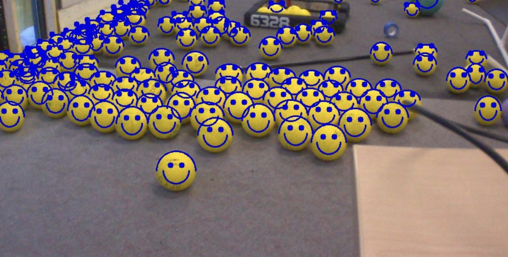
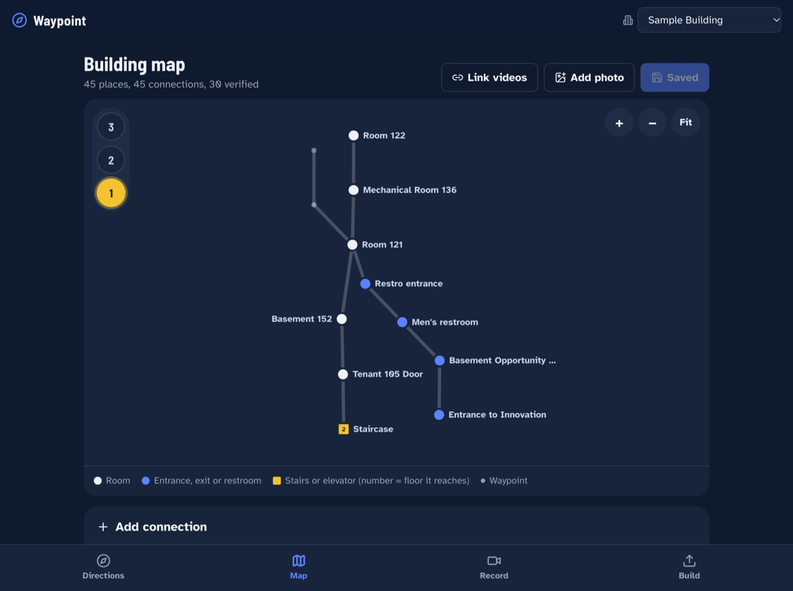
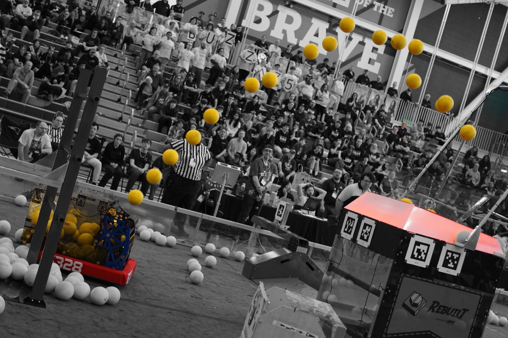
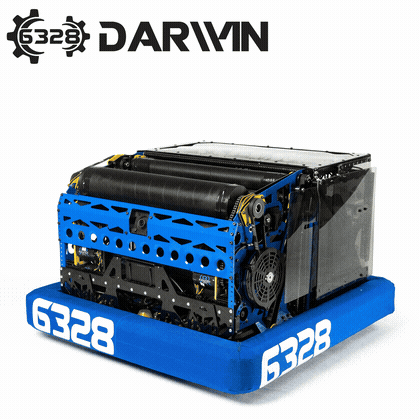
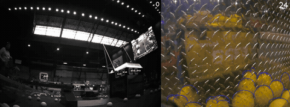
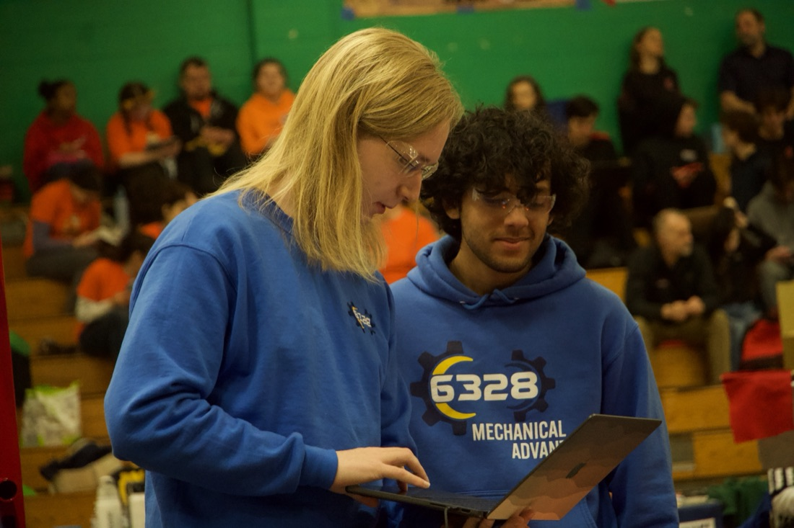
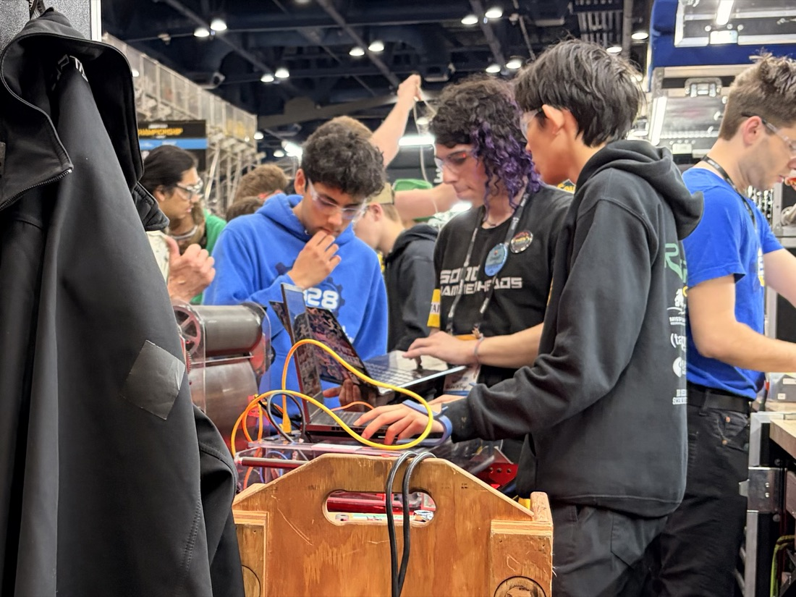
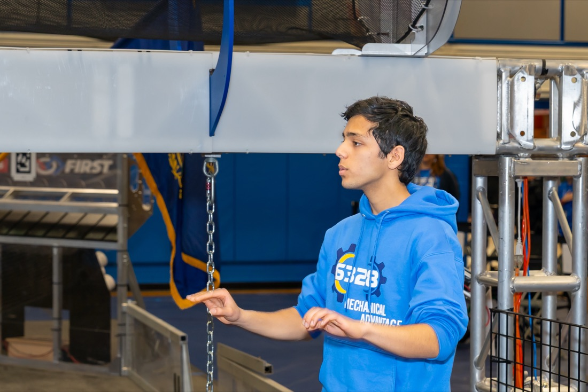
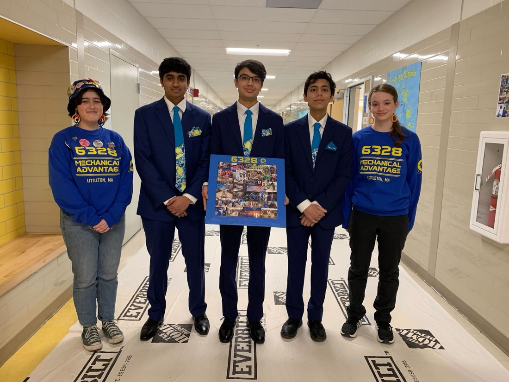

Neelaksh Harnwal
Undergraduate, Computer Science and Engineering, UC San Diego
San Diego, CA
Email: neelaksh.harnwal@gmail.com
LinkedIn |
GitHub |
Engineering Portfolio
About
I am a computer science student at UC San Diego focused on machine learning and computer vision.
For two and a half years I was a Machine Learning Research Associate at the Melkani Lab
(University of Alabama at Birmingham). There I built Attention U-Net segmentation models for cardiac
imaging and co-authored a Scientific Reports paper on computer-vision tracking. I have also
put real-time object detection on competition robots as software lead of FIRST Robotics Competition Team 6328
“Mechanical Advantage,” and built indoor navigation on a local vision-language model.
I also interned at Johnson & Johnson.
Engineering portfolio:

▶ Watch on YouTube: Engineering Portfolio
Machine Learning & Computer Vision
Selected work. Details are in Research Experience and Publications below.
1. Deep learning segmentation of cardiac imaging
Melkani Lab, University of Alabama at Birmingham · 2023–2026
- Developed Attention U-Net deep learning models for automated segmentation of Drosophila cardiac imaging
2. Computer-vision tracking for an automated locomotor assay
Melkani Lab · published in Scientific Reports, 2026
- Co-developed the fly-tracking algorithm that follows individual flies across video frames in a geotaxis (climbing) assay
- Built the analysis software with Heersink School of Medicine biologists, automating analysis of 200,000+ frames
- Code: Melkani-Lab-Fly-Tracking (early fly-linking notebooks)

The Geotaxis Analysis App, used for the automated Drosophila geotaxis assay.
3. Real-time object detection on a competition robot
FRC Team 6328 “Mechanical Advantage” · Software Lead, 2025–2026
- Integrated a Mac Mini coprocessor running onboard object detection of game pieces
- Localized detected game pieces on the field (video below)

Onboard object detection on game pieces (fuel).
Fuel localization from object detection.
4. Waypoint: indoor navigation from walkthrough videos
Team project (4 people), Hacktoberfest, Fall 2026 ·
GitHub
- Turns phone videos of walks through a building into a multi-floor navigation map with photo-and-arrow directions
- A vision-language model (Gemma 3, running locally and offline) reads door plaques and signs and returns structured JSON. On-device OCR checks each word it reports, which stops small-model hallucinations.
- Classical computer vision (Lucas–Kanade optical flow, ORB features, RANSAC, homographies) recovers turns and links separate videos into one map with loop closure

A floor map Waypoint built automatically from walkthrough videos.
Education
- University of California San Diego, B.S. in Computer Science (expected 2030)
Coursework: Computer Vision (CSE 152A), Computational Problem Solving (CSE 11), Putnam Seminar (MATH 96)
- Acton-Boxborough Regional High School, 2026
GPA 3.98/4.0; SAT 1560/1600; National Merit Scholarship Semifinalist
Research Experience
Melkani Lab, University of Alabama at Birmingham, Machine Learning Research Associate (Jun 2023 – Jan 2026)
- Developed Attention U-Net deep learning models for automated segmentation of Drosophila cardiac imaging
- Co-authored the Scientific Reports paper above on a fly-tracking algorithm and automated Drosophila geotaxis workflow
- Built 2 software applications with Heersink School of Medicine biologists, automating analysis of 200,000+ frames
Publications
- D. Melkani, N. Harnwal, S. Desai, D. Patel, and G. C. Melkani.
“Design and implementation of an automated Drosophila locomotor assay using
computer vision tracking.” Scientific Reports, 2026.
doi:10.1038/s41598-026-72974-1
Talks
FIRST World Championship Conferences, George R. Brown Convention Center, Houston, TX
(400+ live audience, 14K views):
- “Data Logging and Visualization”:
2025,
2024
- “Log Replay and Simulation”:
2025,
2024
Data Logging and Visualization (2025):

▶ Watch on YouTube: Data Logging and Visualization (2025)
Log Replay and Simulation (2025):

▶ Watch on YouTube: Log Replay and Simulation (2025)
2024 versions:


Clip from the AdvantageScope presentation: a robot log visualized in augmented reality.
Robotics Network guest appearances (20K views):


▶ Click a thumbnail to watch on YouTube.
Technical Writing
Posts on Team 6328's Chief Delphi build thread, the most-viewed FRC build blog in the world
(500K cumulative views):
- Turret Control
- Automatic Routines + Decisions
- Trajectory Generation
- Auto-Planning
- Programming KitBot
- AprilTag-Relative Constants
- Field Mapping
- Impact & Outreach
Industry Experience
Johnson & Johnson, Operations Strategy Intern (Jul 2026 – Sep 2026; returning as part-time employee)
- Led pilot of MedTech Heart Recovery's first warehouse autonomous mobile robot program; earned $100K support
- Built an inventory management application as sole developer for non-GMP materials, expediting a million-dollar relocation
- Applied percentile analysis and MILP to office seating, informing a $100K office-space decision
- Streamlined injury reporting with a standardized form and Excel dashboard for data-driven response
Leadership Experience
FIRST Robotics Competition Team 6328 “Mechanical Advantage,” Littleton Robotics (2021 – 2026)
3× World Championship Semifinalists (final 32 of 3,500+ teams)

Software Lead (2025 – 2026)
- Integrated a Mac Mini coprocessor and onboard object detection; ran state-machine subsystem control
- Specialized in trajectory generation & optimization and model predictive control maneuvering
- Led a software team of 8: repository tasks, season goals, and training curriculum

Darwin, Team 6328's robot.

Northstar camera feed on the robot.
Autonomous routine in simulation.



At competition: writing code, debugging in the pit, and on the field.
Business & Awards Lead (2023 – 2025)
- Led STEM funding advocacy in the MassFIRST coalition: 40+ legislators' signatures on proposed bills
- Led sponsorship and grant-application training, raising $8,000+ for 3D printers and machining equipment

With Team 6328 teammates.
Honors and Awards
- Team (FRC): Autonomous Award (2024 World Championship); Innovation in Control (2023 World Championship, 2025 NE District); Impact Award (2022, 2023, 2026 NE District); Engineering Inspiration (2024, 2025)
- Individual: FRC Leadership Award Semifinalist (2025); 2× Silver President's Volunteer Service Award (500+ hours)
- Music: Head Drum Major, 120 members, 2× USBands 5A MA/RI Circuit Champions; lead alto sax, UNH Clark Terry Jazz Festival 2nd Place; pianist, Weill Recital Hall at Carnegie Hall
Teaching and Volunteer Experience
Littleton Robotics, FIRST Lego League, Scrimmage Organizer & Team Coach (2022 – 2025)
- Refined a Python scheduler and a JavaScript/SQLite/CherryPy web app and server for a 20+ team Massachusetts Qualifier
- Coached a rookie team of six elementary schoolers to the state championship in year two; 100% return rate
ABRHS Computer Science Club, Competitive Track Leader (2023 – 2026)
- Designed curriculum and taught competitive programming to 20+ members; ACSL Top 10 of 175 teams (2025)
Technical Skills
- Machine Learning & Computer Vision: deep learning, image segmentation (Attention U-Net), object detection & tracking, vision-language models (Gemma), OCR, optical flow, feature matching (ORB, RANSAC)
- ML Libraries & Tools: PyTorch, OpenCV, NumPy, Pandas, Jupyter, Ollama
- Languages & Concepts: Java, Python, C++, JavaScript, SQL; object-oriented programming (OOP), data structures
- Robotics & Optimization: model predictive control, trajectory optimization, state machines, MILP, WPILib
- Other Tools: Git, SQLite, CherryPy, Microsoft 365
Last updated November 2026.